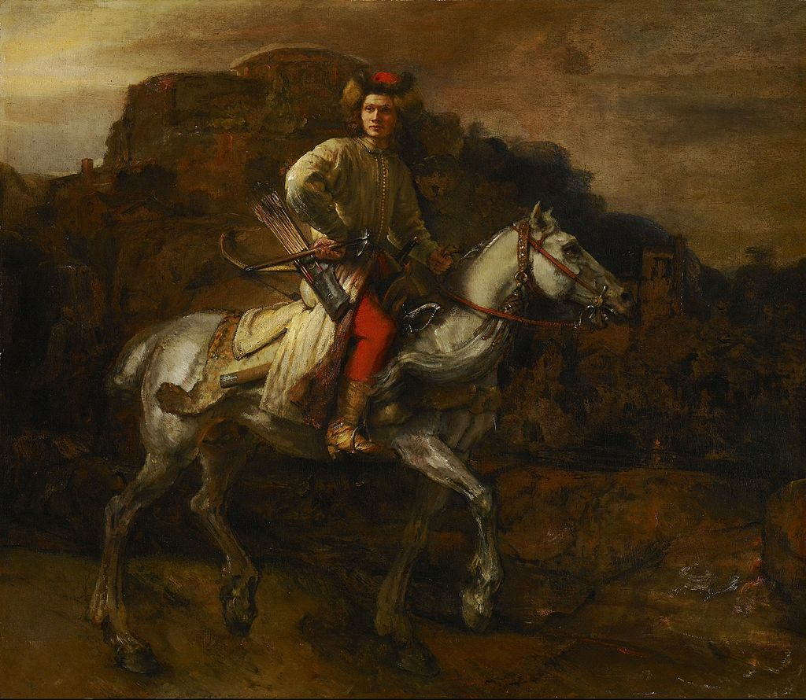

<head>
<meta charset="UTF-8" />
<meta name="keywords" content="drawing, painting" />
<meta name="description" content="drawings by Sunjy" />
<title>Sunjy</title>
<link rel="shortcut icon" type="image/x-icon" href="../../mImages/mCommon/favicon.ico" media="screen" />
<link rel="stylesheet" type="text/css" href="../../mCsses/mCommon/mCssA.css" />
<link rel="stylesheet" type="text/css" href="../../mCsses/mCommon/mCssB.css" />
<link rel="stylesheet" type="text/css" href="../../mCsses/mCommon/mCssC.css" />
<link rel="stylesheet" type="text/css" href="../../mCsses/mCommon/mCssD.css" />
<link rel="stylesheet" type="text/css" href="../../mCsses/mContent/mCssA.css" />
<link rel="stylesheet" type="text/css" href="../../mCsses/mContent/mCssB.css" />
<link rel="stylesheet" type="text/css" href="../../mCsses/mContent/mCssC.css" />
<link rel="stylesheet" type="text/css" href="../../mCsses/mContent/mCssD.css" />
</head>
<script type="text/javascript" src="../../mScripts/mContent/mContentAA.js" /></script>
<script type="text/javascript" src="../../mScripts/mContent/mContentAB.js" /></script>
<script type="text/javascript" src="../../mScripts/mContent/mContentAC.js" /></script>
<script type="text/javascript" src="../../mScripts/mContent/mContentAD.js" /></script>
<script type="text/javascript"></script> 
<script type="text/javascript">
document.write('<div class="mImgAbsolute"></div>');
/*
document.write('<p class="mFontSizeBColor" />From a white paper...</p>');
document.write('<table class="center"><tr><td>');
document.write('');
document.write('</td></tr></table>');
*/
</script>


<script type="text/javascript">
document.write('<p class="mFontSizeBColor" />The Polish Rider</p>');
document.write('<p class="mFontSizeSColor" />“The Polish Rider” depicts a young man traveling on horseback through a dark and gloomy landscape. It is not known whether the painting was a portrait of a particular person, living or historical, or the story it represents.<br><br>There is also some uncertainty about who is the artist of this painting. However, the quality of the art and complex expression on the Rider’s brilliantly painted face all point to Rembrandt, and that is the most considerable consensus of the experts.<br><br>The identity of the portrayed figure has encouraged various theories, but no clear answer. The rider’s outfit, his weapons, and even the breed of the horse are believed to be eastern European.<br><br>The young Rider appears to be facing potential danger in the mountainous landscape. Some historical and biblical characters have been suggested.<br><br>The most interesting speculation is that the figure is an idealistic representation of a “soldier of Christ,” meaning a soldier defending Eastern Europe against the Turks.<br></p>');
document.write('<table class="center" /><tr><td>');
document.write('<br>There is also some uncertainty about who is the artist of this painting. However, the quality of the art and complex expression on the Rider’s brilliantly painted face all point to Rembrandt, and that is the most considerable consensus of the experts.<br><br>The identity of the portrayed figure has encouraged various theories, but no clear answer. The rider’s outfit, his weapons, and even the breed of the horse are believed to be eastern European.<br><br>The young Rider appears to be facing potential danger in the mountainous landscape. Some historical and biblical characters have been suggested.<br><br>The most interesting speculation is that the figure is an idealistic representation of a “soldier of Christ,” meaning a soldier defending Eastern Europe against the Turks.<br>" />');
document.write('</td></tr></table>');
</script>


